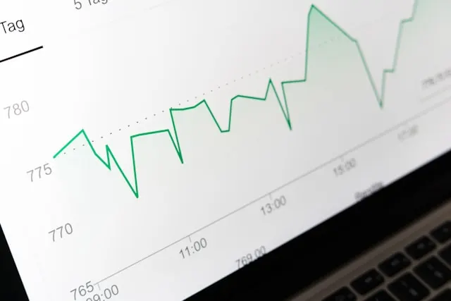

Konsultan Keuangan Bisnis yang lebih dari sekadar pembuat laporan
Sebagai partner strategis finansial dan operasional untuk UMKM, ORE dirancang untuk membantu bisnis menghadapi kompleksitas lewat solusi:
- Membedah angka dan menemukan kebocoran kas yang sering tidak disadari owner.
- Mengoptimalkan struktur biaya agar profit margin bersih meningkat signifikan.
- Merencanakan proyeksi bisnis dan simulasi skenario untuk ekspansi yang aman.

Laba Bisnis
Efisiensi Cost
Terkendali
Telah Dipercaya Oleh Berbagai Lini Bisnis
Masalahnya sering kali
bukan di produk Anda.
Tapi pada cara Anda membaca realita di balik angka. Tanpa sistem finansial yang sehat, pertumbuhan hanyalah sebuah risiko yang tertunda.
Omset Ada, Uang Mana?
Transaksi harian terlihat ramai, tapi saldo rekening seringkali tidak mencerminkan keuntungan yang Anda harapkan.
Ragu Saat Mau Ekspansi
Ingin buka cabang atau tambah tim tapi tidak punya data valid untuk mengukur apakah fondasi bisnis Anda sanggup.
Keputusan Berbasis Tebakan
Seringkali merasa 'meraba dalam gelap' saat harus menentukan strategi harga atau memotong biaya operasional.
Solusi terbaik untuk setiap aspek
operasional bisnis
ORE menyediakan pendampingan dan solusi strategis untuk setiap jenis dan fase bisnis Anda, dari evaluasi rutin hingga lompatan ekspansi.
Pendampingan rutin, bisnis lebih transparan
Banyak bisnis rugi karena membiarkan masalah menumpuk di akhir tahun. ORE hadir setiap bulan untuk memastikan operasional dan keuangan bisnis Anda terpantau ketat.
Pertanyaan yang sering diajukan
Temukan jawaban tentang bagaimana ORE dapat menjadi partner strategis Anda.
Masih punya pertanyaan spesifik?
Jangan ragu, tim kami siap berdiskusi tentang kondisi bisnis Anda.
Chat ORE via WhatsAppAktivitas & Kemitraan ORE.
Mendampingi owner bisnis merestrukturisasi finansial mereka.
Bertumbuh bersama ORE.
Cerita sukses para owner yang kini memegang kendali penuh.
Insights & Analisa
Perspektif kami seputar finansial dan bisnis UMKM.